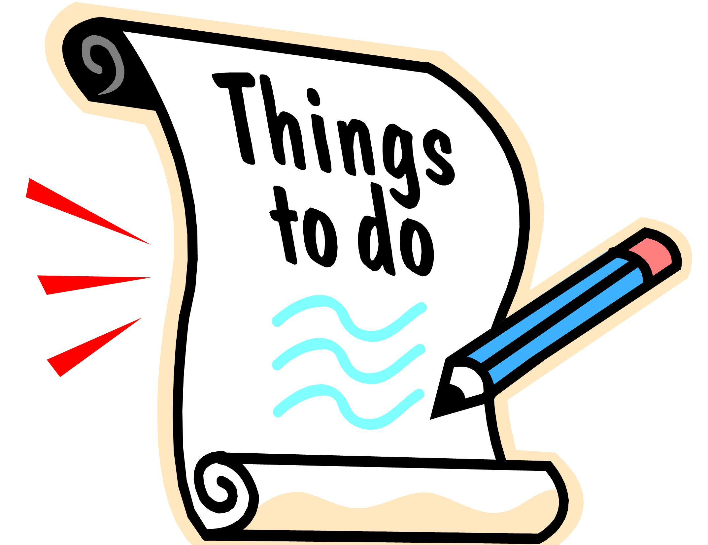

WHO ARE WE?
We are TheReds
We are here to ensure that you, the readers of this
website can learn about the history of the amazing football club,not only that,
you can stay up to date with latest news. Our organization was established in
June 2017, we are an unoffical website and run as a non-profit website, purely
for our fans, we do this website with passion.
WHY WE ESTABLISHED THE WEBSITE?
As said, we are a non-proft organization, the reason behind the establishment of this site was purely because we wanted our fans to have a websit where they can scroll around have fun and find out more about thier club. We as an organization want our fans to know more about the club they support, as well as giving our fans a place to feel free and keep up to date, by subscribeing to the daily newsletter, uou are bound to stay up to date with all United information.
THINGS TO DO!
On this site, we thrive on user features, were you guys as our main thought, these features include, subscribing to the daily newsletter, downloading the PDFs containing information about history of the club on the History page, check out our current set of players, manager and second assistant. Finally, we have a contact page where you can email us some suggestions.